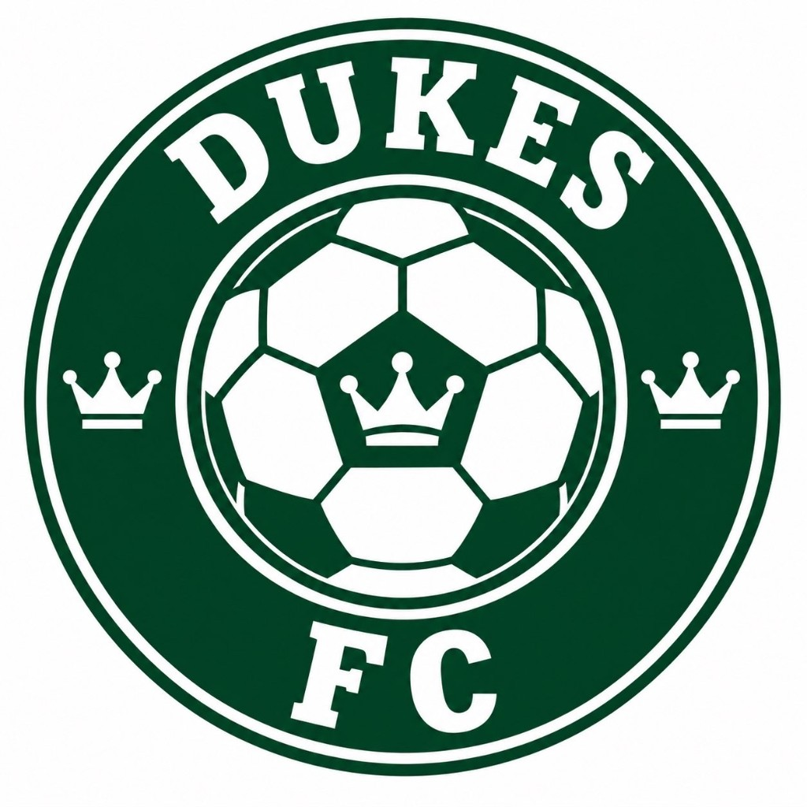
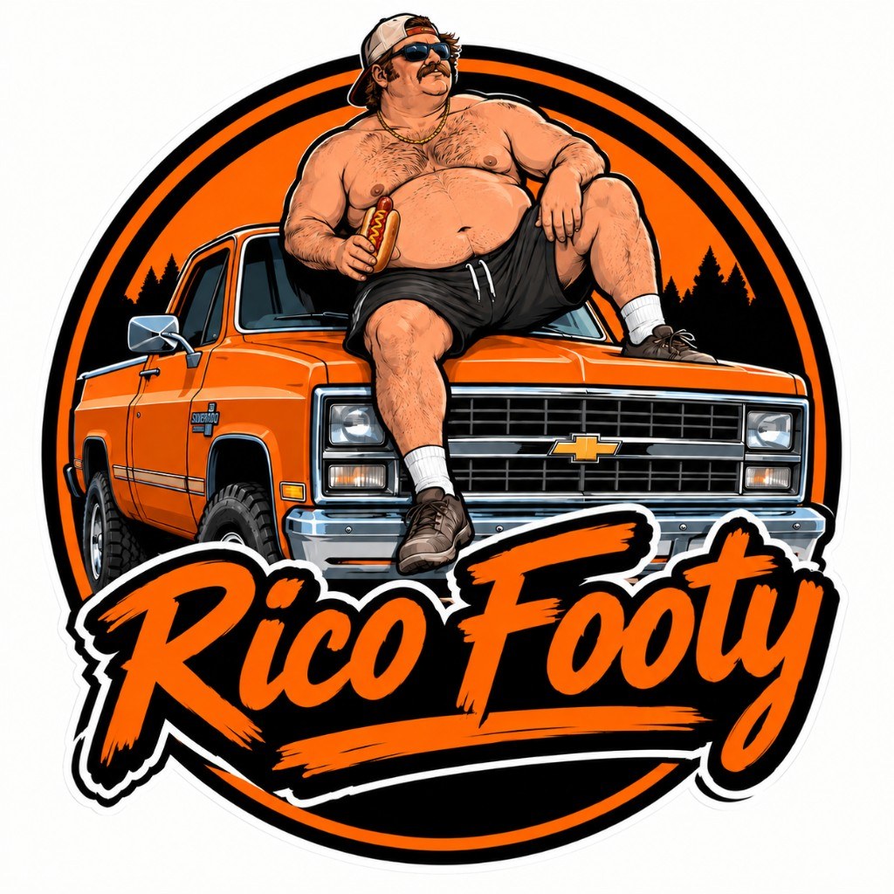
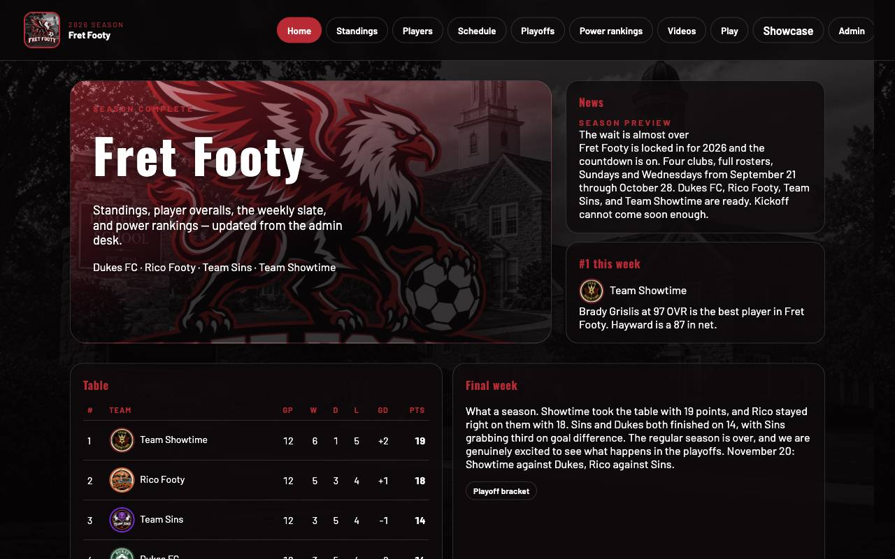
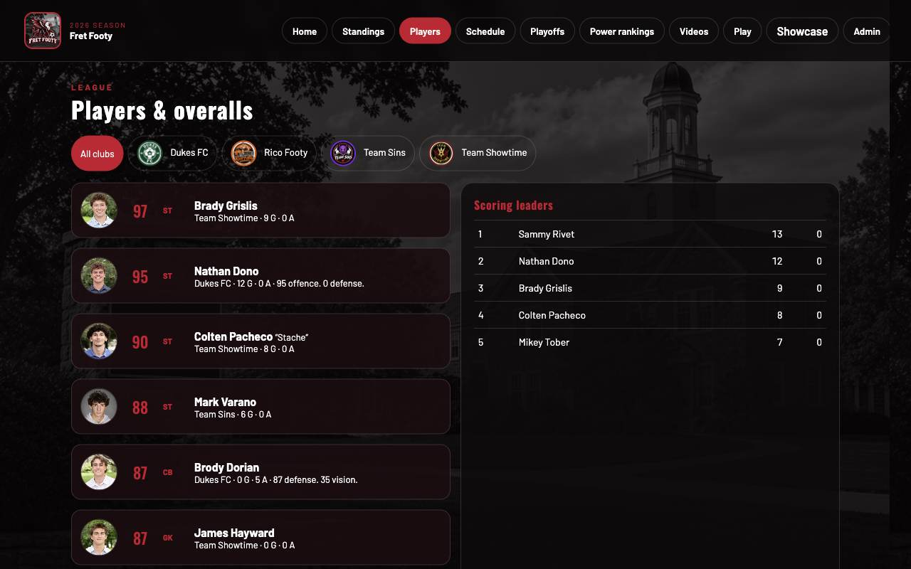
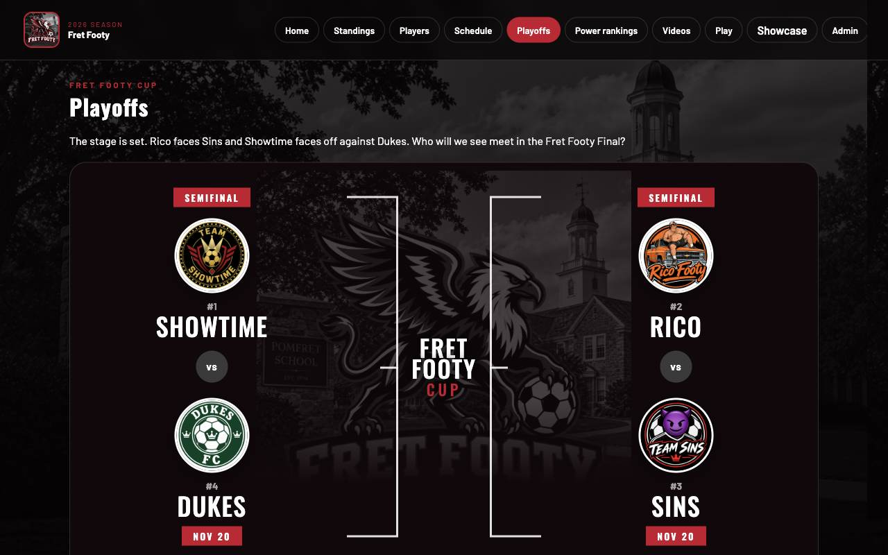

This is the official Fret Footy website. Four teams.

Dukes

RicoSinsShowtime
cgoldstein27-maker.github.io/fret-footy
What it does
Home and the players page.

Home. The table is on there, plus a writeup of how the season went.

Players. Overalls on the left. Goals are in the box on the right.
Standings is the full table, and you can click a team to get the roster. Schedule is all 24 games. Power rankings is the order I put them in that week. Not the same as the points.
What it does
The other pages.
Playoffs The Nov 20 bracket. I'll show it in a minute.
Videos Clips go here. Nothing's up unless someone adds one.
Showcase A separate page that just covers the season.
Admin Where I type in a score, so I don't have to edit the page.
Play A penalty game. Next slide.
The game
Play is penalties.
DukesRicoSinsShowtime
Pick a team. Dukes, Rico, Sins, or Showtime. The shirts use our names.
Overalls matter. A higher overall slows the aim bar down, so the shot is easier.
Season is every club three times, then 1 vs 4 and 2 vs 3.
Regular is once each, then the same bracket.
None of that gets written onto the real table. The website scores and the game scores are separate.
The code
HTML, CSS, and JavaScript.
HTML The page. One file. The buttons change what's on it.
CSS How it looks. Red, black, and the campus photo behind it.
JavaScript The math. A win is 3, a draw is 1, and it totals the goals off each game.
The data Teams, players, and the scores are saved in one file.
Team leaderboard
Showtime had 19. Rico had 18.
1 Showtime · 6–1–519
2 Rico · 5–3–418
3 Sins · 3–5–414
4 Dukes · 3–5–414
Sins and Dukes are tied on points. Sins is third because they let in fewer goals, −1 to −2.
Semis
November 20.

Showtime plays Dukes. Rico plays Sins. Neither one has a score yet.
Point leaders
Sammy had 13 goals.
Sammy Rivet13Rico
Nathan Dono12Dukes
Brady Grislis9Showtime
Colten Pacheco8Showtime
Mikey Tober7Sins
Those are goals. The 19 and 18 from before are team points. Different thing.